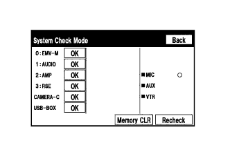
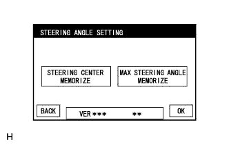

СИСТЕМА ПОМОЩИ ПРИ ПАРКОВКЕ > СИСТЕМА ДИАГНОСТИКИ |
| СИСТЕМА ДИАГНОСТИКИ МОНИТОРА ПОМОЩИ ПРИ ПАРКОВКЕ |
В целях диагностики системы помощи при парковке можно проверить сигналы, получаемые ЭБУ системы помощи при парковке, а также откалибровать, отрегулировать и проверить эту систему с помощью дисплея модуля системы навигации и индикации.
| СМЕНА ЭКРАНОВ ДИАГНОСТИКИ |
для моделей без системы монитора бокового обзора
Во время инициализации ЭБУ системы помощи при парковке
После инициализации ЭБУ системы помощи при парковке
для моделей с широкоугольным монитором переднего вида и бокового обзора
Во время инициализации ЭБУ системы помощи при парковке
После инициализации ЭБУ системы помощи при парковке
для моделей с монитором типа местности
Во время инициализации ЭБУ системы помощи при парковке
После инициализации ЭБУ системы помощи при парковке
| РЕЖИМ ДИАГНОСТИКИ |
Войдите в режим диагностики.
Диагностика неисправностей.
|  |
Проверка системы (проверка с помощью экрана режима проверки системы).
Закончите режим диагностики.
| ПРОВЕРКА СИГНАЛОВ (ВХОДНОЙ СИГНАЛ ЭБУ СИСТЕМЫ ПОМОЩИ ПРИ ПАРКОВКЕ) |
Войдите в режим диагностики.
 |
Выберите "Function Check/Setting" (проверка/настройка функций) на экране "Service Menu" (меню обслуживания), чтобы перейти на экран "Function Check/Setting".
 |
Выберите "Camera Setting" (настройка камеры) на экране "Function Check/Setting".
| Инициализация ЭБУ системы помощи при парковке | Переключение между экранами |
| Не выполнено | Экран "SIGNAL CHECK" (проверка сигналов) |
| Выполнено | Экран "MODE SETTING" (установка режима) |
 |
Если появляется экран "MODE SETTING", выберите "BACK CAMERA SETTING" (настройка задней камеры), чтобы перейти на экран "SIGNAL CHECK".
 |
ПРОВЕРКА СИГНАЛОВ
На экране "SIGNAL CHECK" можно проверить состояние сигналов, передаваемых ЭБУ системы помощи при парковке, а также настройки.
| Описание | Информация о проверке | Примечание |
| SPEED | Входной сигнал скорости | Если отображается "CHK" (красного цвета), при выборе "NEXT" система не перейдет к следующему экрану. |
| CAMERA SW | Вход сигнала переключателя на рулевом колесе в сборе (выключателя широкоугольного монитора переднего вида и бокового обзора) | |
| BCTY | Состояние обмена данными по шине CAN с главным ЭБУ кузова | |
| MIRROR SW | Вход сигнала отвода наружного зеркала заднего вида | |
| SHIFT | Вход сигнала положения рычага переключения передач | |
| STR SIG | Вход сигнала датчика угла поворота рулевого колеса | |
| HANDLE | Вход сигнала положения рулевого колеса | |
| BRAND | Сигнал марки TOYOTA/LEXUS | |
| BODY | Сигнал размера кузова | |
| DEST | Вход сигнала данных о рынке сбыта | |
| MTM | Сигнал монитора типа местности | |
| WFS SET | Сигнал широкоугольного монитора переднего вида | |
| T/M | Трансмиссия сигнал типа |
Проверка SPEED
Проверка CAMERA SW
Убедитесь, что для "CAMERA SW" отображается "OK" (синий), и выберите "OK".
Убедитесь, что "OK" (синий) изменяется на "CHK" (красный). Нажмите выключатель широкоугольного монитора переднего вида и бокового обзора (переключатель на рулевом колесе) и убедитесь, что "CHK" (красного цвета) меняется на "OK" (синего цвета).
Проверка BCTY
Проверка MIRROR SW
Проверка SHIFT
Проверка STR SIG
Проверка HANDLE
Проверка BODY
Проверка DEST
Проверка BRAND
Проверка MTM
Проверка WFS SET
Проверка T/M
Закончите режим диагностики.
| КАЛИБРОВКА ПРИ ОБСЛУЖИВАНИИ АВТОМОБИЛЯ |
| УСТАНОВКА УГЛА ПОВОРОТА РУЛЕВОГО КОЛЕСА (ПОСЛЕ ИНИЦИАЛИЗАЦИИ ЭБУ СИСТЕМЫ ПОМОЩИ ПРИ ПАРКОВКЕ) |
Установите рулевое колесо в центральное положение и остановите автомобиль.
Войдите в режим диагностики.
|
Выберите "Function Check/Setting" (проверка/настройка функций) на экране "Service Menu" (меню обслуживания).
|
Выберите "Camera Setting" (настройка камеры) на экране "Function Check/Setting".
|
В окне "MODE SETTING" (настройка режима) выберите пункт "STEERING ANGLE SETTING" (настройка угла поворота рулевого колеса).
|
Выберите "NEXT" (далее) на экране "SIGNAL CHECK", чтобы перейти к экрану "STEERING ANGLE SETTING" (настройка угла поворота рулевого колеса).
|  |
Установка угла поворота рулевого колеса
Убедитесь, что рулевое колесо отцентровано (не более приблизительно +/-5 градусов), и выберите "STEERING CENTER MEMORIZE" (сохранить центральное положение рулевого колеса).
После запоминания центрального положения рулевого колеса поверните рулевое колесо до упора вправо, а затем влево и выберите "MAX STEERING ANGLE MEMORIZE" (сохранение максимального угла поворота рулевого колеса) или "OK".
Выберите "MAX STEERING ANGLE MEMORIZE" (сохранение максимального угла поворота рулевого колеса) или "OK", чтобы сохранить настройку угла поворота рулевого колеса и перейти на экран "MODE SETTING".
Закончите режим диагностики.
Проверьте настройку угла поворота рулевого колеса.
Убедитесь, что на экране системы помощи при парковке прогнозируемая траектория движения перемещается, пока рулевое колесо не будет повернуто до упора влево или вправо.